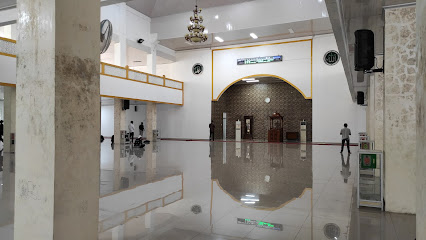

<html lang="en">
<head>
    <title>Latihan</title>
    <link rel="stylesheet" href="leaflet.css"/>
    <script src="leaflet.js"></script>
</head>
<body>
    <div id="mapku" style="width: 100%; height: 600px;"></div>
</body>
    
    <script type="text/javascript">
        var mymap = L.map('mapku').setView([-0.9137822,100.4640162],17);
       
        L.tileLayer('https://tile.openstreetmap.org/{z}/{x}/{y}.png', {
           maxZoom:18,
           id:'mapbox/streets-v11',
           tileSize: 512,
           zoomOffset: -1
       }).addTo(mymap);
   
    var LeafIcon = L.Icon.extend({
        options: {
            iconSize: [50,50]
        }
    })

    var masjidicon = new LeafIcon({iconUrl: 'images/masjid.png'});

    var info_pnp ='<p style  ="text-align: center;"></p><p>Masjid Jamiatul Ilmi Politeknik Negeri Padang.</p>';
    var info_pnp ='<p style  ="text-align: center;"></p><p>Alamat :  Jl. Limau Manis, Limau Manis, Kec. Pauh, Kota Padang, Sumatera Barat 25176.</p>';
    var info_pnp ='<p style  ="text-align: center;"></p><p>Alamat : Limau Manis, Kec. Pauh, Kota Padang, Sumatera Barat 25176</p>';
    var info_pnp ='<p style  ="text-align: center;"></p><p>Alamat : Limau Manis Sel., Kec. Pauh, Kota Padang, Sumatera Barat 25157</p>';
    var info_pnp ='<p style  ="text-align: center;"></p><p>Alamat : Jl. Sawahan Dalam III No.7a, Sawahan, Kec. Padang Tim., Kota Padang, Sumatera Barat 25171</p>';
    var info_pnp ='<p style  ="text-align: center;"></p><p>Alamat : Jl. Aur Duri Indah, Parak Gadang Tim., Kec. Padang Tim., Kota Padang, Sumatera Barat 25143</p>';
    var info_pnp ='<p style  ="text-align: center;"></p><p>Alamat : Jl. Khatib Sulaiman, Alai Parak Kopi, Kec. Padang Utara, Kota Padang, Sumatera Barat 25173</p>';
    var info_pnp ='<p style  ="text-align: center;"></p><p>Alamat : Jl Alang Lawas Koto 1 No.II, Alang Laweh, Padang Selatan, Padang City, West Sumatra 25133</p>';
    var info_pnp ='<p style  ="text-align: center;"></p><p>Alamat : Ps. Ambacang, Kec. Kuranji, Kota Padang, Sumatera Barat 25147</p>';
    var info_pnp ='<p style  ="text-align: center;"></p><p>Alamat : Jl. Nipah, Berok Nipah, Kec. Padang Bar., Kota Padang, Sumatera Barat</p>';

   L.marker([-0.9140191647482115, 100.46694114738241],{icon: masjidicon}).bindTooltip("Masjid Jamiatul Ilmi Politeknik Negeri Padang").bindPopup(info_pnp).addTo(mymap);
   L.marker([-0.9171510310675061, 100.4574275665848],{icon: masjidicon}).bindTooltip("Masjid Nurul Ilmi Unand").bindPopup(info_pnp).addTo(mymap);
   L.marker([-0.9259966033601036, 100.45277258927021],{icon: masjidicon}).bindTooltip("Masjid Raya Limau Manis").bindPopup(info_pnp).addTo(mymap);
   L.marker([-0.941517357605855, 100.45954904681844],{icon: masjidicon}).bindTooltip("Masjid Almarhamah").bindPopup(info_pnp).addTo(mymap);
   L.marker([-0.9476868053801477, 100.3685176170366],{icon: masjidicon}).bindTooltip("Masjid Baitul Ihsan").bindPopup(info_pnp).addTo(mymap);
   L.marker([-0.9557966865126867, 100.38594124681684],{icon: masjidicon}).bindTooltip("Masjid Baitul Haadi").bindPopup(info_pnp).addTo(mymap);
   L.marker([-0.9236074353520163, 100.36273987262436],{icon: masjidicon}).bindTooltip("Masjid Raya Sumatera Barat").bindPopup(info_pnp).addTo(mymap);
   L.marker([-0.9549115126486566, 100.36552399858054],{icon: masjidicon}).bindTooltip("Masjid Al-Irsyad").bindPopup(info_pnp).addTo(mymap);
   L.marker([-0.9389242477049317, 100.39868383894203],{icon: masjidicon}).bindTooltip("Masjid Asy-Syifa").bindPopup(info_pnp).addTo(mymap);
   L.marker([-0.960400852288297, 100.35304435228693],{icon: masjidicon}).bindTooltip("Masjid Al-Hakim").bindPopup(info_pnp).addTo(mymap);
            
        
     var popup = L.popup()
               .setLatLng([-0.9214535100986077, 100.4491797666248])
               .setContent('I am a Standalone Popup.')
               .openOn(mymap);
   
     function onMapClick(e) {
           popup 
               .setLatLng(e.latlng)
               .setContent('You Clicked the map at' + e.latlng.toString())
               .openOn(mymap);
       }
       mymap.on('click', onMapClick);
   
       var myLocation = [
           [-0.9242109249264069, 100.36237153753346,'Masjid Raya Sumbar','informasi tentang masjid raya Sumbar'],
           [-0.9376530171185209, 100.36042123938745,'Kantor gubernur Sumbar','Informasi tentang Kantor Gubernur Sumbar'],
           [-0.87555458220865, 100.38738528171484,'Kantor Walikota Padang','Informasi tentang Walikota Sumbar'],
           [-0.9145035345178503, 100.46617245473253,'Polkiteknik Negeri Padang','Informasi tentang PNP'],
       ]; //array dari lokasi Kita
   
       for (var i = 0 ; i<mylocation.lenght; i++){
           markerMaps = new L.marker([myLocation[i][0], myLocation[i][1]]).addTo(mymap).bindTooltip(myLocation[i][2]).bindPopup(myLocation[i][3]);
       }
</script>

</html>